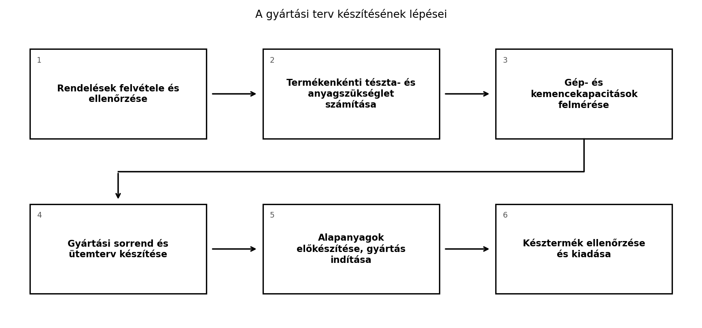

A pékség éjszakai műszakjában a vezető péknek reggel hat órára friss árut kell kiadnia, miközben a rendelések szerint többféle terméket kell gyártani. Ha a dagasztógépet, az osztógépet és a kemencét nem hangolják össze, akkor a tészta túlkél, a kemence időnként üresen jár, máskor meg sorban állnak a teli kocsik. A termelésszervezés és a kapacitásszámítás éppen ezt a káoszt előzi meg: megmutatja, hogy egy éjszaka alatt mennyi termék készíthető el, hány dagasztásra van szükség, mikor kell vetni a kemencébe, és hol van a gyártósor leggyengébb láncszeme. A számítások nélkülözhetetlenek ahhoz, hogy a rendelésállományt időben, megfelelő minőségben és biztonságosan teljesíteni lehessen.
Képzelj el egy szerelt több sütőteres kiskemencét, amelynek minden sütőterébe négy tálca fér, tálcánként 20 darab kifli. Ha a sütési idő 18 perc, akkor egy sütőtér egy óra alatt körülbelül 3,3 ciklust tud teljesíteni, tehát megközelítőleg 13-14 tálca árut süt. A pontos számoláshoz az alábbi folyamatábra mutatja a termeléstervezés lépéseit.

Az ábra azt szemlélteti, hogy a kapacitásszámítás nem önálló lépés, hanem a rendeléstől a késztermékig tartó lánc szervezésének központi eleme.
Definíció. A gyártási terv az adott műszakra vagy napra szóló, a rendelések teljesítéséhez szükséges termékek, mennyiségek, gyártási sorrend, erőforrások és időpontok összehangolt leírása. Tartalmazza, hogy melyik dagasztást mikor kell indítani, mikor kell osztani, alakítani, keleszteni, sütni, hűteni és csomagolni.
Definíció. A rendelésállomány a vevőktől beérkezett, visszaigazolt vagy megerősített megrendelések összessége, amelyből a gyártási terv kiindul. A pékség gyakran a napi átlagos rendelés és a külön csúcsrendelések összegéből számol, hogy elkerülje a túlgyártást és a selejtet.
Definíció. A kapacitás az adott gép, berendezés vagy munkaterület időegység alatt elvégezhető teljesítménye, termékmennyiségben (darab/óra, kg/óra, tálca/óra) kifejezve. A kapacitás mindig a tényleges, biztonságos és minőségileg elfogadható üzemelésre vonatkozik, nem a gépkönyvi maximum erőltetésére.
Definíció. Az ütemidő egy művelet vagy egy gyártási ciklus időtartama. Például egy dagasztás ciklusideje a kiméréstől a kész tészta kiürítéséig tart, a kemence ciklusideje a vetés kezdetétől a következő vetés lehetőségéig. Az ütemidőket percekben, illetve órában adjuk meg.
Definíció. A szűk keresztmetszet a gyártási folyamat azon berendezése vagy művelete, amelynek kapacitása a legkisebb, ezért meghatározza az egész sor maximális teljesítményét. Ha a kemence lassabb, mint a dagasztó, akkor a gyártás tempóját a kemence szabja meg.
A gyártási terv készítése lépésenként:
Szabály. Az ütemidőket mindig a valós, mért ciklusokból kell származtatni, lehetőleg tartalékidővel. A számított kapacitás nem növelhető a biztonsági berendezések kiiktatásával, a dagasztási idő lerövidítésével vagy a sütési hőmérséklet ésszerűtlen emelésével.
A kemence óránkénti kapacitását a sütési idő, a sütőfelület vagy a tálcakapacitás, valamint a darabonkénti tömeg alapján számíthatjuk.
Legyen: - a sütőtérbe egyszerre betölthető tálcák száma, - az egy tálcára rakható darabok száma, - a sütési idő percben, - a késztermék átlagos tömege kilogrammban.
A kemence darab/óra kapacitása:
A tömegkapacitás:
Megjegyzés. A képlet egyetlen sütőtér folyamatos üzemére vonatkozik. Ha a kemencének több egymástól független sütőtere van, a kapacitások összeadhatók. Ha van gőzölési vagy lehúzási idő a ciklusban, akkor azt a sütési időhöz hozzá kell adni.
A dagasztógép óránkénti kapacitása a ciklusonkénti tészta tömegéből és a ciklusidőből számolható:
Itt a dagasztó hasznos tészta-kapacitása (kg), a teljes ciklusidő percben, amely magában foglalja a betöltést, a dagasztást, a pihentetést és az ürítést.
Az osztógép darab/óra kapacitása:
Ha az osztógép ciklusokban dolgozik (például egyszerre 20 darabot vág), akkor a ciklusonkénti darabszámot szorozzuk az óránkénti ciklusok számával.
A gyártósor teljes kapacitását mindig a leglassabb elem szabja meg:
A pék feladata, hogy a szűk keresztmetszetet felismerje, és a gyártási tervben ehhez igazítsa a többi berendezés kihasználtságát. Ha például a kemence szűk keresztmetszet, akkor a dagasztást nem érdemes a maximális ütemben futtatni, mert a tészta túlérne.
Példa. Egy szerelt kiskemence sütőterébe 6 tálca fér, tálcánként 12 darab 0,5 kg-os kenyeret süt. A sütési idő 32 perc. Mennyi a kemence óránkénti kapacitása darabban és kilogrammban?
Megoldás.
Adott: , , perc, kg.
Keresett: , .
A darabkapacitás:
A tömegkapacitás:
Ellenőrzés: 60 perc alatt 60/32 ≈ 1,875 ciklus történik. Egy ciklusban 6·12=72 darab sül. 1,875·72 = 135 darab, ami rendben van.
Példa. Egy spiráldagasztó hasznos tészta-kapacitása 60 kg, a teljes ciklusidő 25 perc. Egy osztógép percenként 40 darabot vág. A kemence kapacitása 135 darab/óra. Mennyi a dagasztó és az osztó kapacitása, és hol van a szűk keresztmetszet, ha a termék átlagos tömege 0,5 kg?
Megoldás.
Dagasztó kapacitás:
Darabra átszámolva:
Osztó kapacitás:
A három berendezés közül a kemence kapacitása a legkisebb (135 db/óra), tehát a szűk keresztmetszet a kemence. A dagasztó elméletileg 288 db/órára, az osztó 2400 db/órára lenne képes, de a sort a kemence 135 db/órára korlátozza.
Példa. Egy éjszakai műszak 6 órát jelent (22:00–04:00). A rendelés: 400 db 0,5 kg-os kenyér, valamint 800 db kifli (0,06 kg/db), a kifli sütési ideje 18 perc, a kenyéré 32 perc. A kemence mindkét termékhez egyetlen sütőterű, kapacitása kenyérrel 135 db/óra, kiflivel 240 db/óra (a példa egyszerűsítéseként tálcánként ugyanúgy 12 darabbal – a Szemléletes kép 20 db/tálcás kemencéje más gép –, azaz betöltésenként 72 darabbal számolunk; a nagyobb kapacitás a rövidebb sütésből adódik: betöltés/óra, db/óra). Hogyan osszuk be a műszakot?
Megoldás.
Először a szükséges sütési időt számoljuk ki.
Kenyér: 400 db, kapacitás 135 db/óra, tehát:
Kifli: 800 db, kapacitás 240 db/óra, tehát:
Teljes sütési idő: óra, azaz kb. 6 óra 18 perc. Mivel a kemence egyetlen sütőterű, a két termék sütése nem fedheti át egymást, a sütési idők összeadódnak. Ez önmagában túllépi a 6 órás műszakot.
Az első sütés előtt ráadásul el kell végezni a tésztakészítést: tanulási példaként a kifli dagasztása, osztása, alakítása 1 óra, kelesztése 55 perc, azaz az első sütés a műszak kezdete után legkorábban 1 óra 55 perccel indulhat. Az átfedésmentes ütemterv (kiflivel kezdve):
| Időpont | Tevékenység |
|---|---|
| 22:00–23:00 | Kifli: első tészták dagasztása, osztása, alakítása |
| 23:00–23:55 | Kifli kelesztése (55 perc); közben a további kiflitészták lépcsőzve indulnak, hogy a kemence ne várjon |
| 23:55–03:15 | 800 kifli sütése (3 óra 20 perc) |
| 01:00–02:30 | Kenyértészta dagasztása, osztása, alakítása (a kelesztés 40 perc, lépcsőzve a betöltések előtt) |
| 03:15–06:13 | 400 kenyér sütése (2 óra 58 perc) |
Következtetés. A kemence 23:55-től kb. 06:13-ig foglalt, ezért a 22:00–04:00-es műszakban a rendelés nem teljesíthető. Még ha az előkészítést az előző műszak végezné, a 6 óra 18 perces sütés akkor is meghaladná a 6 órát. Megoldás: a műszak meghosszabbítása (kb. 22:00–06:15), a sütés korábbi kezdése, vagy nagyobb kapacitású (második) kemence. A szűk keresztmetszet tehát a kemence, nem a dagasztás. (A kelesztési és sütési időket az üzemi technológiai lap adja; ellenőrizendő.)
Egy kis pékségben a reggeli csúcs rendelés teljesítése közben a pék azt tapasztalta, hogy a kiflik egy része túlkelt, mire a kemence felszabadult. A hiba oka az volt, hogy a dagasztógép kapacitását a pék a kenyéréhez igazította, és túl sok kiflitésztát gyártott egyszerre. A kemence, mivel csak korlátozott számú tálcát tudott befogadni, nem győzte a gyorsan érő kifli tészta sütését. A megoldás az lett, hogy a kiflit kisebb adagokban, a dagasztást és a kelesztést a kemence ciklusához hangolva készítették, így a kelesztési idő és a sütési idő összhangba került. A dokumentált ütemterv segített a műszak minden dolgozójának ugyanazt a ritmust követni.
A termelésszervezési számítások minőségi ellenőrzése a következő pontokból áll:
Hiba: A kemencekapacitást csak a sütőfelületből számolják, figyelmen kívül hagyva a gőzölési és a lehúzási időt. Következmény: a tényleges óránkénti teljesítmény kisebb lesz, a termék késik. Megelőzés: mérjük a teljes ciklusidőt, és a kapacitást azzal számoljuk.
Hiba: A dagasztógép ciklusidejét a tiszta dagasztási idővel azonosítják. Következmény: a betöltés, ürítés és pihentetés ideje kimarad, a gép valójában lassabb, a tészta túlérhet. Megelőzés: a gyártási tervben a valós ciklusidőt használjuk.
Hiba: A szűk keresztmetszetet nem ismerik fel, és a gyorsabb gépeket is teljes terheléssel járatják. Következmény: felesleges tésztamennyiség keletkezik, amely a kelesztőben túlél, vagy a hűtőben foglal helyet. Megelőzés: a kapacitásokat mindig együtt vizsgáljuk, és a legkisebbhez igazítjuk a többi berendezést.
Hiba: Az ütemtervet nem dokumentálják, csak fejben tartják. Következmény: műszakváltáskor vagy betanított dolgozó esetén a sorrend felborul. Megelőzés: írásos terv, amelyet a műszak elején mindenkivel egyeztetnek.
A válaszok a Megoldások rész elején, az „Önellenőrzés – válaszok” alcím alatt találhatók.
1. feladat (A). Egy kemencébe 10 tálca fér, tálcánként 18 darab 0,6 kg-os kenyeret süt. A sütési idő 35 perc. Számítsa ki a kemence darab/óra és kg/óra kapacitását!
2. feladat (A). Egy osztógép percenként 30 darabot vág. Mennyi az óránkénti kapacitása? Ha a termék tömege 0,5 kg, mennyi a kg/óra kapacitás?
3. feladat (B). Egy dagasztógép hasznos tészta-kapacitása 80 kg, ciklusideje 35 perc. Mennyi az óránkénti tésztakapacitása kg-ban? Ha a termék késztömege 0,5 kg, és a sütési veszteség 10%, hány késztermék készülhet óránként ebből a tésztából? (A sütési veszteségnél a késztermék tömege = feladási tömeg × (1-v) )
4. feladat (B). Egy műszak 8 óra. A rendelés: 600 db kenyér (0,5 kg) és 1200 db kifli (0,06 kg). A kemence kapacitása kenyérből 120 db/óra, kifliből 200 db/óra. Mennyi idő szükséges a sütésekhez? Elvégezhető-e a munka 8 óra alatt, ha a kemence nem tudja egyszerre sütni a két terméket? Válaszát indokolja!
5. feladat (C). Egy pékségben a dagasztógép kapacitása 200 kg/óra, az osztógépé 1800 db/óra, a kelesztőkamráé 400 db/óra, a kemencéé 120 db/óra. A termék átlagos tömege 0,4 kg. Határozza meg a szűk keresztmetszetet, és javasoljon intézkedést a kapacitáskihasználás javítására anélkül, hogy a biztonsági előírásokat megszegné! (Figyelembe veheti, hogy a kelesztőkamra bővíthető, de a kemence nem.)
6. feladat (D). Készítsen egyszerű ütemtervet egy 6 órás műszakra! A rendelés: 300 db kenyér (sütési idő 30 perc, kemence kapacitás kenyérből 100 db/óra) és 900 db kifli (sütési idő 20 perc, kapacitás 300 db/óra). A dagasztás, osztás, alakítás összesen 1,5 óra a kenyérnél, 1 óra a kiflinél. A kelesztés a kenyérnél 40 perc, a kiflinél 55 perc. Tervezze meg a műszak időpontjait úgy, hogy minden termék megsüljön. A tervet táblázatosan adja meg, és mondja ki, belefér-e a rendelés a 6 órás műszakba!
Adott: , , perc, kg.
Ellenőrzés: egy ciklus 180 db, óránként 60/35 ≈ 1,714 ciklus, 1,714·180 ≈ 308,5 db, rendben.
Dagasztógép kapacitás:
A feladási tömeg és a késztermék tömeg kapcsolata: , ahol , tehát kg.
Az óránkénti késztermék darabszám:
Megjegyzés: a sütési veszteség 10%-os, tehát a késztermék tömege a feladási tömeg 90%-a.
Kenyér sütési idő:
Kifli sütési idő:
Összesen 11 óra, tehát a 8 órás műszak nem elég. A kemence nem tudja egyszerre sütni a két terméket, ezért a sütési idők összeadódnak. A gyártási tervben vagy több műszakot, vagy nagyobb kapacitású kemencét kell alkalmazni.
A kapacitások darabra átszámolva. A dagasztó kg/óra kapacitását a feladási tömeggel kell osztani (egyszerűsítésként 10% sütési-hűlési veszteséget feltételezünk): kg.
A legkisebb: kemence 120 db/óra, tehát a szűk keresztmetszet a kemence. A feladat feltétele szerint a kemence nem bővíthető, a kelesztőkamra viszont igen.
Javaslat: a sor kapacitása 120 db/óra marad. A dagasztást kisebb, a kemence ütemére hangolt adagokra bontjuk. A kelesztőkamra bővítése önmagában nem növeli a kibocsátást, de hűtve (késleltetett) kelesztéssel puffert ad, így a kemence megállás nélkül, folyamatosan terhelhető. A kemence ciklusidejét (betöltés, lehúzás) mérjük és csökkentjük, a biztonsági előírások megsértése nélkül.
Sütési igény (a kemence kapacitásából): - Kenyér: 300 db / 100 db/óra = 3 óra (6 betöltés × 50 db × 30 perc) - Kifli: 900 db / 300 db/óra = 3 óra (9 betöltés × 100 db × 20 perc)
Összes sütés: 6 óra. A kemence egyetlen sütőterű, ezért a sütések nem fedhetik át egymást.
Az első sütés előtt kell a tésztakészítés: kiflinél 1 óra (dagasztás, osztás, alakítás) + 55 perc kelesztés = 1 óra 55 perc. Ha 22:00-kor kezdődik a műszak, a kemence 23:55-től 05:55-ig süt (kiflivel kezdve):
| Időpont | Tevékenység |
|---|---|
| 22:00–23:00 | Kifli: dagasztás, osztás, alakítás |
| 23:00–23:55 | Kifli kelesztés (55 perc); a további kiflitészták 20 percenként lépcsőzve indulnak |
| 23:55–02:55 | Kifli sütés: 9 × 20 perc, betöltésenként 100 db (összesen 900 db) |
| 00:45–02:15 | Kenyértészta: dagasztás, osztás, alakítás (1,5 óra) |
| 02:15–02:55 | Kenyér kelesztés (40 perc), a betöltések előtt lépcsőzve |
| 02:55–05:55 | Kenyér sütés: 6 × 30 perc, betöltésenként 50 db (összesen 300 db) |
Következtetés. A rendelés a 22:00–04:00-es 6 órás műszakban nem teljesíthető, mert a sütés önmagában 6 óra, és az első sütés előtt még 1 óra 55 perc előkészítés kell (összesen kb. 7 óra 55 perc). Megoldás: a kiflitészta készítését az előző műszak indítja (kb. 20:05-kor), így a kemence 22:00–04:00 között folyamatosan süthet, vagy a műszak 22:00–06:00-ig tart. A feladat lényege: a kemence a szűk keresztmetszet, ezért a dagasztást és kelesztést úgy kell lépcsőzni, hogy a kemence sose várjon, és a tészta se keljen túl.
A termelésszervezés a rendelésállományból kiindulva, a gyártási terv segítségével hangolja össze a pékség gépeit és a műszak idejét. Az ütemidő a teljes ciklusidőt jelenti, amely a kapacitásszámítás alapja. A kemence darab/óra kapacitása a sütőtérbe betölthető tálcák és darabszámok, valamint a sütési idő hányadosából számolható. A dagasztógép kapacitása a hasznos tésztamennyiség és ciklusidő alapján, az osztógépé a percenkénti darabszámból adódik. A gyártósor teljes kapacitását a legkisebb értékű berendezés, azaz a szűk keresztmetszet határozza meg. Az éjszakai műszak ütemtervének készítésekor a sütési, dagasztási, kelesztési és hűtési időket integrálni kell, hogy a rendelés időben, megfelelő minőségben teljesüljön. Továbbvitt eredmény. A kapacitásszámítás és az ütemezés alapját képezi a Hulladékkezelés és környezetvédelem a pékségben alfejezetben a selejt és a hulladék mennyiségének becsléséhez, valamint az A vizsga felépítése és az írásbeli számítási feladatok alfejezetben a vizsgafeladatok kapacitásszámítási típusfeladataihoz.